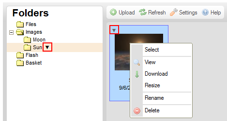

Kontextov矇 menu je vyskakovac穩 menu, kter矇 je zobrazeno kdykoliv kliknete prav羸m tla?穩tkem my禳i na soubor nebo slo鱉ku uvnit? rozhran穩 CKFinder, pou鱉ijte kl獺vesu Menu/Application na Va禳穩 kl獺vesnici, nebo kl獺vesovou zkratku (Ctrl+)Shift+F10. D獺v獺 V獺m p?穩stup do operac穩 pr轡zkumn穩ka soubor轡, kter矇 jsou dostupn矇 pro dan羸 typ objektu.
Kontextov矇 menu m轡鱉e b羸t tak矇 otev?eno kliknut穩m na ikonu 禳ipky dol轡
( ),
kter獺 je dostupn獺 v n?kter羸ch prost?ed穩ch nebo v prohl穩鱉e?穩ch mobiln穩ch telefon轡 vedle n獺zvu
zvolen矇 slo鱉ky nebo v r獺me?c穩ch souboru, tak jak je zobrazeno na obr獺zku n穩鱉e.
),
kter獺 je dostupn獺 v n?kter羸ch prost?ed穩ch nebo v prohl穩鱉e?穩ch mobiln穩ch telefon轡 vedle n獺zvu
zvolen矇 slo鱉ky nebo v r獺me?c穩ch souboru, tak jak je zobrazeno na obr獺zku n穩鱉e.

Ka鱉d矇 kontextov矇 menu se st獺v獺 z ?ady mo鱉nost穩 (p?穩kaz轡), kter矇 mohou b羸t zvoleny, aby byla provedena ur?it獺 operace, kter矇 jsou jim p?id?leny.
Pozn獺mka: N?kter矇 mo鱉nosti kontextov矇ho menu mohou b羸t zak獺z獺ny (a proto jsou za禳edl矇), v z獺vislosti na nastaven穩ch CKFinder, kter矇 vy鱉aduje V獺禳 spr獺vce syst矇mu.
Abyste provedli operaci uvedenou v kontextov矇m menu, klikn?te na ni lev羸m tla?穩tkem my禳i. Kontextov羸m menu se m轡鱉ete tak矇 pohybovat pomoc穩 kl獺ves ?ipka nahoru a dol轡 nebo kombinacemi Shift+Tab a Tab. Jakmile je mo鱉nost vybr獺na, m轡鱉ete j穩 zvolit kl獺vesou Mezern穩k nebo Enter. Pokud je mo鱉nost za禳edl獺, nen穩 dostupn獺, proto鱉e nejsou spln?ny ur?it矇 podm穩nky (nap?. mus穩te m穩t syst矇mov獺 opr獺vn?n穩 pro proveden穩 jist羸ch zm?n souboru nebo slo鱉ky).
Menu je ?穩zeno podle kontextu, co鱉 znamen獺, 鱉e v n?m zobrazen矇 mo鱉nosti z獺vis穩 na objektu, kter羸 vyberete. N獺sleduj穩c穩 jsou menu, na kter矇 m轡鱉ete narazit p?i pr獺ci se standardn穩 instalac穩 CKFinder.
Je zobrazeno p?i kliknut穩 na slo鱉ku v Panelu slo鱉ek prav羸m tla?穩tkem my禳i (nebo pou鱉it穩m kl獺vesov羸ch zkratek, kter矇 jsou pops獺ny v羸禳e):

Je zobrazeno p?i kliknut穩 na soubor v Panelu souboru prav羸m tla?穩tkem my禳i (nebo pou鱉it穩m kl獺vesov羸ch zkratek, kter矇 jsou pops獺ny v羸禳e):